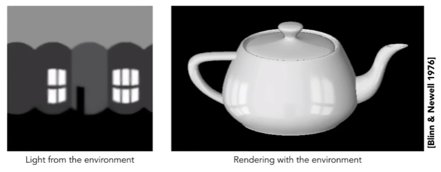
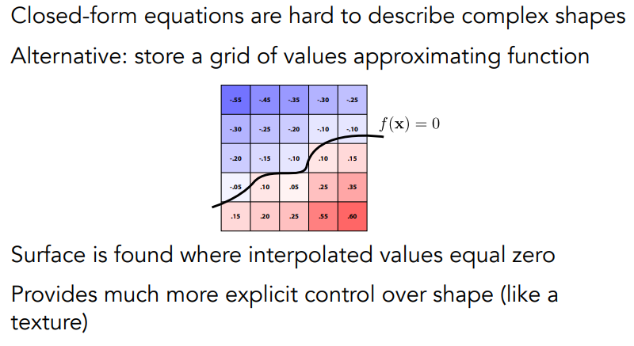

# GAMES101
# Shading
Definition in Computer Graph: The Progress of applying a material to an object.
# Blinn-Phong Reflectance Model
Shading is Local
Computer light reflected toward camera at a specific shading point.
Inputs:
- Viewer direction, v
- Surface normal, n
- Light direction, l (for each of many lights)
- Surface parameters (color, shininess, ...)
all unit vectors
No shadows will be generated! ()
Diffuse Reflection:
- Light is scattered uniformly in all directions
- Surface color is the same for all viewing directions
Light Falloff:
Shading independent of view direction:
Lambertian (Diffuse) Shading
Specular Term (Blinn-Phong)
Intensity depends on view direction
Bright near mirror reflection direction
V close to mirror direction <span style="color: red">half vector (半程向量) near normal</span>
运用半程向量可以降低运算量
- Measure "near" by dot product unit vectors
p is used to limit the range of the difference between the half-range vector and the normal vector
p is used to control the size of the highlight
Ambient Term (环境光)
Shading that does not depend on anything
- Add constant color to account for disregarded (无视) illumination (照明) and fill in black shadows
- This is approximate / fake!
Blinn-Phong Reflection Model:
\begin{align} L&=L_a+L_d+L_s\\ &=k_aI_a+k_d(I/r^2)\max(0,n\cdot l)+k_s(I/r^2)\max(0,n\cdot h)^p \end{align}# Shading Frequencies
Shade each triangle (flat shading)
Flat shading:
Triangle face is flat - one normal vector
Not good for smooth surface
Shade each vertex (Gouraud shading)
Gouraud shading:
- Interpolate colors from vertices across triangle
- Each vertex has a normal vector
Shade each pixel (Phong shading)
Phone shading:
- Interpolate normal vectors across each triangle
- Compute full shading model at each pixel
- <span style="color: red">Not the Blinn-Phong Reflectance Model</span>
Shading Frequency: Face, Vertex or Pixel
Defining Pre-Vertex Normal Vectors
Best to get vertex normals from the underlying (底层) geometry.
For example, the normal direction of the vertex on the sphere is the line from the vertex to the center of the sphere
Otherwise have to infer vertex normals from triangle faces
- Simple scheme: average surrounding face normals
- N_v=\frac{\sum_iN_i}
Defining Per-Pixel Normal Vectors
Barycentric interpolation (插值) of vertex normals
# Graphics Pipeline
Shader Programs
- Program vertex and fragment processing stages
- Describe operation on a single vertex (or fragment)
- Shader function executes once per fragment
- Outputs color of surface at the current fragment's screen sample position
# Texture
Surface lives in 3D world space
Every 3D surface point also has a place where it goes in the 2D image (texture).
Visualization of Texture Coordinates
Each triangle vertex is assigned a texture coordinate (u, v)
texture applied to surface
# Interpolation Across Triangles
why interpolate？
- Specify values at vertices
- Obtain smoothly varying (变化) across triangles
Barycentric Coordinates (重心坐标)
a coordinate system for triangles
Barycentric coordinates are not invariant under projection!
# Applying Textures
Simple Texture Mapping: Diffuse Color
for each rasterized screen sample (x, y):
// Using barycentric coordinates
(u, v) = evaluate texture coordinate at (x, y)
texcolor = texture.sample(u, v)
// Usually the diffuse albedo(散射反照率) Kd
// (recall the Blinn-Phong reflectance model)
set sample's color to texcolor
# Texture Magnification
# Insufficient texture
Generally don't want this —— insufficient texture resolution (分辨率)
A pixel on a texture —— a texel (纹理元素，纹素)
Bilinear interpolation
Use linear interpolation twice to get the color changed smoothly
Take 4 nearest sample locations, with texture value as labeled.
Bilinear interpolation usually gives pretty good results at reasonable costs.
Bicubic interpolation
Sampling the difference of 16 surrounding pixels to get the color of the current pixel
# Oversized texture
Can lead to moire and jaggies.
The size of the area covered by a screen pixel on the texture is not the same. The farther the object is from the screen, the larger the area of the texture on the object covered by one screen pixel.
We can use oversampling to reduce this sampling error
- high quality, But costly.
- When highly minified, many texel in pixel footprint.
- Signal frequency too large in a pixel.
- Need even higher sampling frequency.
Another way to solve the sampling error is to avoid sampling
Just need to get the average value within a range!
Mipmap
Allowing (fast, approximately, square) range queries.
mipmap will cause a third() of the excess storage space.
Computing Mipmap Level D:
Select the pixels above and to the right of the sampling point, and choose the pixel farthest from the sampling point in the uv coordinate system, and the pixel distance between the two points is used as the side length estimate of the square range covered by the pixel.
Use the area of the square covered by this pixel to determine the sampled mipmap level.
Trilinear Interpolation
A linear interpolation of the mipmap sampling results at two levels will result in a smoother transition at different levels of the mipmap
But mipmap will cause overblur in the far.
why?
The samples of mipmap are all square, when the texture is compressed very much on x or y axis, the samples taken on mipmap are the same as the xy axis compression rate, and the information of the other axis direction will be lost.
Anisotropic Filtering
各向异性过滤
Generate not only xy isometric mipmap, but also unequal mipmap, so that the loss of information is reduced when the area covered by pixel points on the screen is rectangular.
Mipmap and summed area tables
- can look up axis-aligned rectangular zones.
- Diagonal footprints still a problem
# Applications of Textures
In modern GPUs, texture = memory + range query (filter)
A piece of data that can be quickly calculated for various queries
Many applications:
- Environment lighting
- Spherical Environment Map
- Problem: The top and bottom of the image will appear distorted and stretched
- Problem: The top and bottom of the image will appear distorted and stretched
- Cube Map
- Spherical Environment Map
- Texture can affect shading
- Bump Mapping (凹凸贴图)
- Adding surface detail without adding more triangles
- Perturb (扰乱) surface normal per pixel (for shading computations only)
- "Height shift" per texel defined by a texture
- How to perturb the normal
- 2D
- 3D
- Calculate the partial derivatives (偏导) in the u and v directions, and obtain the normal direction by cross multiplying (叉乘) the two directions.
- this is in local coordinate! need to translate to world coordinate.
- 2D
- Adding surface detail without adding more triangles
- Displacement mapping (位移贴图)
- uses the same texture as in dumping mapping
- Actually Moves the Vertices
- Provide Precomputed Shading
- 3D Texture and Volume Rendering
- Bump Mapping (凹凸贴图)
# Geometry
Many way to Represent Geometry.
Implicit
- algebraic surface (代数曲面)
- level sets (水平集)
- distance functions
- ...
Explicit
- point cloud
- polygon mesh (多边形网格)
- subdivision, NURBS
- ...
Each choice best suited to a different task/type of geometry
# Implicit Representations
Based on classifying (分类) points, points satisfy some specified relationship.
Pros:
- compact description (e.g. a function)
- certain queries easy (inside object, distance to surface)
- good for ray-to-surface intersection
- for simple shapes, exact description / no sampling error
- easy to handle changes in topology (e.g., fluid)
Cons:
- difficult to model complex shapes
Algebraic Surfaces
Constructive Solid Geometry
Distance Functions
Blending Distance Functions
Scene of Pure Distance Functions
Level Set Methods

Level Sets from Medical Data
Level Sets in Physical Simulation
Fractals
# Explicit Representations
All points are given directly or via parameter mapping.
Point Cloud
Easiest representation: list of points (x, y, z).
Easily represent any kind of geometry
Useful for LARGE datasets (>>1 point/pixel)
Often converted into polygon mesh
Difficult to draw in undersampled regions
Polygon Mesh
Store vertices & polygons (often triangles or quads)
Easier to do processing / simulation, adaptive sampling
More complicated data structures
Perhaps most common representation in graphics
The Wavefront Object File (.obj) Format
Commonly used in Graphics research
Just a text file that specifies vertices, normals, texture coordinates and their connectivities
- v: vertex
- vt: (u, v) coordinates
- vn: normal vector
- f: a triangle face. Each point is defined by v/vt/vn
# Curves
Bezier Curve (贝塞尔曲线)